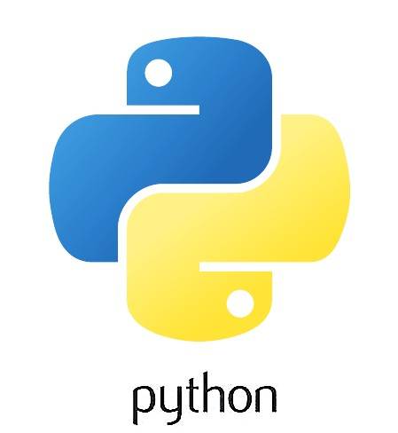

#프로그래밍
< 파이썬 > 
파이썬은 프로그램을 설계하는 프로그래밍 언어 중 하나이다. 프로그래밍 언어에는 C, 자바, 자바 스크립트 등 여러 가지가 있다. 그 중에서 파이썬이 가장 널리 사용되고 있는 것으로 알려져 있는데, 그것은 간결하고 쉽다는데서 원인을 찾을 수 있다. 문법이 다른 프로그래밍 언어에 비해 어렵지 않을 뿐 아니라 표현하는 구조도 사람이 대화하는 형식을 이용함으로써 초보자도 쉽게 배울 수 있다는 강점이 있다.
< JavaScript >
자바스크립트는 객체 기반의 스크립트 프로그래밍 언어이다. 이 언어는 웹 브라우저 내에서 주로 사용되며, 다른 응용 프로그램의 내장 객체에도 접근할 수 있는 기능을 가지고 있다. 또한 Node.js와 같은 런타임 환경과 같이 서버 프로그래밍에도 사용되고 있다. 자바스크립트가 썬 마이크로시스템즈의 자바와 구문이 유사한 점도 있지만, 이는 사실 두 언어 모두 C 언어의 기본 구문에 바탕을 뒀기 때문이고, 자바와 자바스크립트는 직접적인 연관성은 약하다. 자바스크립트는 ECMA스크립트의 표준 사양을 가장 잘 구현한 언어로 인정받고 있으며 ECMAScript 5 까지는 대부분의 브라우저에서 기본적으로 지원되었으나 ECMAScript 6 이후부터는 브라우저 호환성을 위해 트랜스파일러로 컴파일된다.
#어학
< 토익 >
토익은 Test of English for international Communication의 약자로 국제 실용 영어능력시험을 의미한다. 일상생활이나 국제업무 등에 필요한 실용영어 능력을 평가하는 대표적인 시험이다. 일반적으로 토익을 준비하는 사람들은 대학교 졸업이나 편입, 취업 어학스펙, 공무원과 같은 국가고시 영어 시험 대체 등을 위해 성적을 취득하려는 목적으로 공부한다. 많은 사람들이 토익이라는 시험을 준비하는데 약 1~2달 정도 기간을 잡는다. 또한, 성적의 유효기간은 2년이며 공공기관의 경우 등록하면 5년가지 연장된다.
< 토플 >
토플(TOEFL, Test Of English as a Foreign Language) 시험은 ETS(미국교육평가원)에서 주관하는 시험으로, 영어가 모국어가 아닌 학생들의 영어능력을 측정하는 시험이다. 평가 영역은 읽기, 듣기, 말하기, 쓰기로 구성되어 있다. 영어권 대학이나 기관에서 요구하는 수준의 영어 능력을 갖추었는지 측정하기 때문에 주로 대학 입학, 직장, 이민 목적으로 활용된다. 토플의 가장 보편적인 응시 형식은 개인 응시용의 인터넷 기반 시험인 iBT이다. 전체 시험 시간 2시간 동안 읽기, 듣기, 말하기, 쓰기 네 가지 영역을 본다. 각 영역 사이 쉬는 시간 없이 진행돤다.